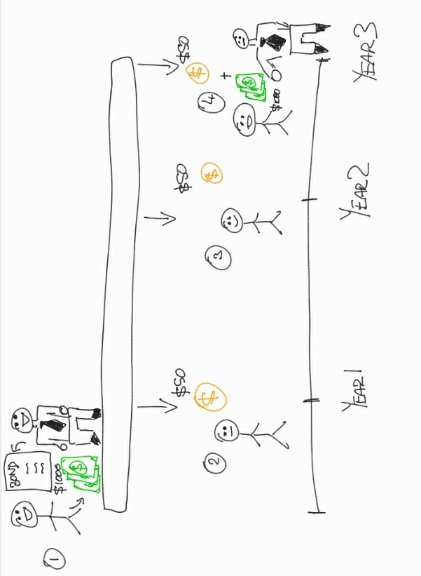
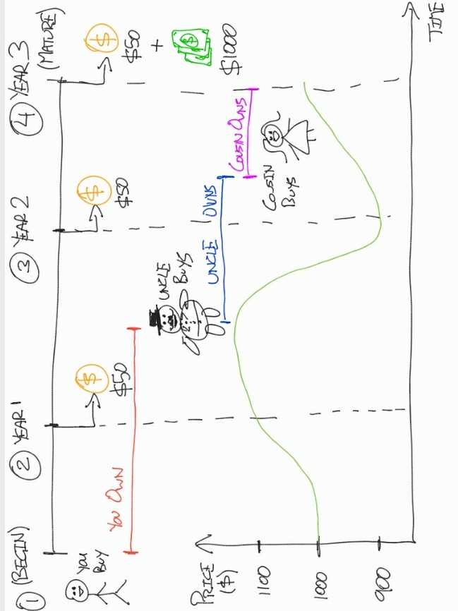

Bond yields: simplified
Let cartoons detangle the mystery

So many persons want to know how much they can make on a bond and get frustrated when they can't get a straight answer. Worse, even you might feel scammed if you hear one figure, work it out yourself and get something lower than expected. The truth is that it's hard to tell "how much you'll make" because there are so many different ways to measure that. If you've ever been confused with this or you know someone who is, hopefully this can help you.
We'll start by looking at what bonds are. Then, we'll break down how we measure the ways bonds behave and what that means for you. To wrap up, we'll dive into why these things matter so that you can make more informed investment decisions.
DISCLAIMER: this is not financial advice. I'm trying to explain the facts, nothing else -- so I'm not responsible for how you use this information :) Speak to your licensed financial advisor before buying bonds or any securities.
What bonds are
A bond is a promise that someone who has your money will pay you back. While we like to say "borrow", it's really more like "rent". Here's why -- if you rent anything: a car, a tuxedo, even somewhere to live, there are usually 2 conditions:
- At the end of some time, you have to give back whatever you rented in good condition because it's really not yours
- You pay money to the person who owns whatever you're renting in exchange for getting to use it
With bonds, the borrower rents your money from you. In line with #1, you're supposed to get your money back at the end of some time period. For a bond, that's its maturity date. So if you bought a $1000 bond from me (a.k.a. I gave you a promise that I'd pay you back $1000 I borrowed from you), you'd expect me to give you back that $1000 on its maturity date.
Is that $1000 the only money you get? Nope. In line with #2, you also get the rental fee for them using your money. With bonds, this is called interest, but finance people also call it coupon payments.. Why is "payments" plural, you may ask?
Imagine you buy a $1000 bond. You hear it's going for 5% and you'll get payments (yes, plural) once a year for 3 years. Usually, it will look something like this:
Let's break this down:
- You talk to your investment advisor (he likes to wear ties). He connects you with someone who sells you the bond (remember: this means you give up $1000 now and get a promise that you will get that $1000 back).
- After 1 year, it's time for you to get a payment. You get $50. Your face isn't happy because you gave up $1000 and you're only getting $50. Why?
Coupon payments are based on the coupon rate. Remember that 5% you heard the bond was offering? That was the coupon rate. So every year (unless otherwise stated) you get 5% of the initial value of the bond. 5% of $1000 is $50, so you get $50 at the end of year 1. - Similarly, at the end of year 2 you get another $50.
- Year 3 comes and the borrower isn't happy because he's paying you a lot of money. Not only do you get the $50 you're supposed to in year 3, but you also get back the $1000 from the beginning. All in all, the bond cost you $1000, but you got paid $50 on 3 different times + got back your $1000. This means you received $1150 in total, and $150 of that is new money you didn't have before.
Simple. So why can bonds get so complicated? Different measurements mean different things, and if you don't know what's being measured -- you will naturally be confused.
How we measure the ways bonds behave
So far we've talked about the coupon rate and maturity date assuming you:
- bought the bond when it was first being issued, and
- will hold the bond until the maturity date
You don't always have to play by those rules.
If you own the bond, you're entitled to coupon payments
Those $50 payments in our example go to anyone who has the bond at the time payments are being given out. So let's imagine you had the bond at the end of year 1. You'd get paid year 1's $50. What if you gave the bond to your cousin in year 2 and they kept it for the next 2 years? Who would get year 2 and year 3's payments? Whoever has the bond. So no more money for you! Since your cousin has the bond, your cousin gets the $50 for year 2 AND year 3 AND the $1000 at the end. What a happy cousin!
But you could have also sold the bond to your uncle, cousin, or anyone else. You could say:
"Hmm, if I kept the bond to the maturity date, I'd make $1150 total. Since I already got $50, I have $1100 left. I don't feel like waiting around for that, so I'll sell the bond to my rich uncle for $1100. That way, I get my money back and so does he."
Sounds good? This tells us bonds can be traded, and the price that bonds go for today aren't necessarily the price they'll go for tomorrow.
Think about it:
- You bought the bond for $1000
- Your uncle bought the same bond later on for $1100
- Your uncle might even sell it next year for $900 for some reason. Who knows?
The same bond can have different prices over time. But coupon payments are the same $50 every time, because coupon payments are calculated based on the bond's initial value, not their current price.
Let's visualize this:
- You buy the bond for $1000. Who owns it at the end of year 1? You do (look at the red line). So you get the coupon rate (5%) x the initial bond value ($1000) = a $50 coupon payment.
- Your uncle buys the bond between the end of year 1 and the end of year 2. He buys it at the going price at the time: which is not $1000. It's now $1100 (look at the green line). This means you sold it for $100 more than you bought it, and he had to pay $100 more than you did for the same bond.
- Also, your uncle owns the bond at the end of year 2, so he gets the coupon payment for year 2. Does he get 5% x $1100. NO! Even though he paid $1100 for the bond, coupon payments are based on the initial value of the bond. So he gets $50... the 5% coupon rate x the $1000 initial value just like you.
- The bond's value falls to around $900 and your uncle is annoyed, so he sells it to your cousin before year 3 is over. She buys it at $900 because that's the market price. She gets the same $50 coupon payment + the $1000 at the end of year 3. Why? She owns the bond. The bond is a promise of getting the initial value back as well as coupon payments for the time period, and since she owns that promise, she gets the benefits.
The lesson? You don't only make money by waiting on coupon payments.
You can make (or lose) money from buying and selling bonds too.
To make this clearer:
| Person | $ spent buying bond | Coupons | Cashout | $ made on bond (coupons + cashout) | Profit ($ made - $ spent) | |
| You | $1000 | $50 | $1100 | $1150 | $150 | |
| Uncle | $1100 | $50 | $900 | $950 | -$150 | |
| Cousin | $900 | $50 | $1000 | $1050 | $150 |
This is one of the main reasons why it's hard to tell how much you'll make on a bond. Its price might go up and give you a selling opportunity to make a whole lot more money, or its value might tank, so you sell in a panic and lose money.
While the coupon rate is the most commonly quoted "interest rate" on bonds, there are 2 more that give you a snapshot of a bond's relative value at any point in time.
Current yield and yield to maturity
The word 'current' talks about what's happening now. So the current yield is how much a bond's coupon payments will make you this year, relative to its current value.
Here's a good time to add in some new words. We've been saying so far that we calculate coupon payments with a bond's initial value. In our example and in many real world cases, this inital value is often $1000. In finance, this initial bond value is called par value. You bought your bond at par value, but your uncle bought it above par value. This means he bought it at a premium, or more specifically, a premium of $100. Similarly, your cousin bought it for less than par value, so she bought it at a discount of $100.
When we talk about a bond price being at par, premium or discount, we're looking at how much more or less expensive it was than when it started out. Since a bond's current value is its market value, the current yield is just the coupon payments for this year divided by its market price right now. From our example:
- In year 1, the coupon payments totalled $50 and the price was $1000, so the current yield (CY) was $50 divided by $1000 = 0.05 or 5%. Note that when the bond's current market value is the same as the par, or initial value, the current yield and coupon rate are the same.
- In year 2, we have the same $50 coupon but divided by $1100, so CY is about 0.045 or 4.5%. When you have to pay more for the bond, but the bond doesnt pay you more, your profit, or yield, is less. Remember, the coupon rate did not change , but market movements meant you had to pay more to get in on the action.
- In year 3, the coupon is still $50 but the price is now $900, so CY is about 5.6%. You paid less to get the same earnings, so your profit is higher.
"Current" is about right now. But suppose someone buys a bond late and wants to know their return on investment? Enter the yield to maturity (YTM).
This answers "how much money should I make if I buy the bond now, hold it, and never sell it?" The math behind this is surprisingly complicated, and a lot of persons (and computers) work it out by trial and error. But let's simplify it a little to show the concept, going back to our example:
- Buying in year 1:
- you'd make $1000 at cashout + (3 coupon payments @ $50 each) = $1150.
- You paid $1000, so your profit is $150, and your "YTM" is roughly that $150 divided by the current price of $1000.
- Your "YTM" would be around 15%.
- Buying in year 2:
- you'd make $1000 at cashout + (2 coupon payments @ $50 each) = $1100.
- You paid $1100, and your profit is $0. Your "YTM" is roughly that $0 divided by the current price of $1100 = 0%.
- You make no profit, but you don't lose anything either since you held it and made back your money. This is how we knew your uncle would make back his $1100 earlier.
- Buying in year 3:
- you'd make $1000 at cashout + (1 coupon payment @ $50) = $1050.
- You paid $900, so your profit is $150, and your "YTM" is roughly that $150 divided by the current price of $900.
- Your "YTM" would be about 16.7%.
Big disclaimer: these figures are just to show the concept. Actual YTM calculations take into account the time value of money, which is why these YTM figures in real life would be smaller. This also doesn't take into account inflation, which would really make the real return on these numbers look dismal.
Bonds are called fixed-income instruments, and you may have picked that up because the payout is $50 no matter what. Some bond coupon rates are "floating", but those are more complicated and we're trying to keep this as simple as possible. So now we're going to wrap up this epistle by looking at why these things matter.
Why these things matter
Bond offerings usually tell you the coupon rate. Now you know what that is: the coupon rate is how much of the par value you'd get paid at the end of each period , usually yearly. Many bonds pay twice a year but quote their coupon rates "per year". So in that case, 5% on a $1000 bond would be $25 every 6 months instead of $50 every year. Coupon rates are important because they tell you about the bond's intention: what it will pay you regardless of what the rest of the market chooses to do later on.
The current yield looks at what you can make this year if you bought the bond right now. This is important because it helps to ground you in the present: "how much can I make in the short term?". It also lets you compare apples to apples by looking at bonds with different maturity dates all on the same time horizon: one year.
The yield to maturity tells you how much you'd make if you bought the bond now, held it and never sold it. Instead of giving you a less time-bound perspective like the coupon rate or a present perspective like the current yield, the YTM shows you from now to the future.
While none of these predict what future bond prices may be, meaning they don't tell you how much you can make from buying or selling, they each give you a different perspective so you can decide what's best for you. There are also many other bond metrics, but these are the basics that you'll most likely see when doing your research.
Actually wrapping up now
In this guide, we said that a bond is a promise to get back your money in the future. Since buying a bond is renting out your money, you'd also get rent payments in the form of coupons. Bonds can be bought or sold for more or less than their initial value, which opens another way to earn from them: trading.
We distinguished the coupon rate from the current yield and the yield to maturity, and spoke about some assumptions that make the figures different from how they'd be in real life. Finally, we emphasized that a holistic approach using multiple bond metrics can give you better insight into what investments are best for you.